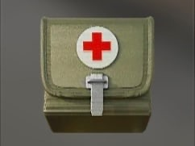
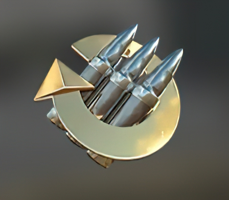
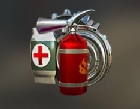
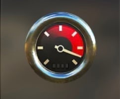
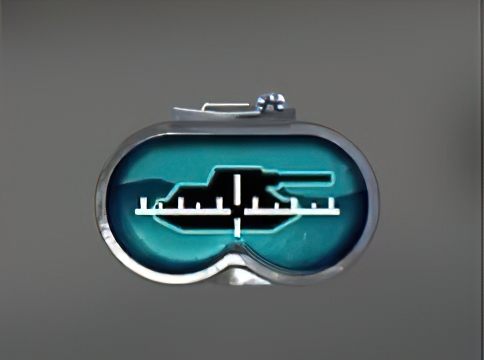
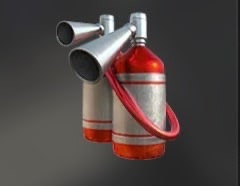
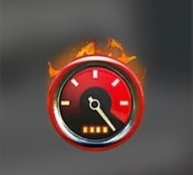
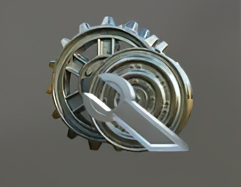
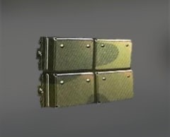

|  |  |  |  |  |  |  |  |  |
 |
| Аптечка: Лечение раненых членов экипажа |
Адреналин: +20% к скорости перезарядки орудия +10% к вероятности повреждения модулей противника |
Универсальный ремкомплект: Тушение пожара, ремонт поврежденных модулей, лечение раненых членов экипажа |
форсаж: +20% к мощности двигателя |
Калибровка прицела: -40% ко времени сведения -40% к разбросу орудия |
Автоматический огнетушитель: Автоматическое тушение пожара |
Улучшенный форсаж: +40% к мощности двигателя +5% к скорости поворота шасси +5км/ч к скорости вперед +10км/ч к скорости назад |
Ремкомплект: Ремонт поврежденных модулей |
Вольфрамовые сердечники Снаряд с сердечником наносят 105-125% от среднего урона |
Динамическая Защита: Уменьшает полученный урон -20% к полученному урону от любых снарядов, кроме фугаса |
© Все права пидоров защищены. 2023-2025